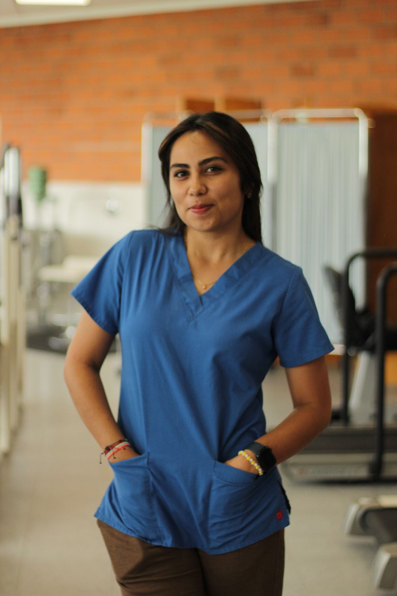

Kinesoul

Especialista en Fisioterapia Vascular y Oncológica
Experiencia integral en fisioterapia para pacientes de diversas áreas: vascular, oncológica, deportiva, geriátrica y rehabilitación general.
Su formación académica refleja un compromiso constante con la excelencia y la actualización profesional. Es egresada de la Licenciatura en Fisioterapia por la Universidad Popular Autónoma del Estado de Puebla y actualmente cursa el D.O. en Osteopatía en la Escuela de Osteopatía de Madrid, COMB, donde profundiza en un enfoque integral del cuerpo y la salud. Complementa su trayectoria con certificaciones en Técnicas Neurodinámicas, Punción Seca y un Diplomado Internacional en Articulación Temporomandibular. Gracias a esta sólida preparación, integra diversas metodologías terapéuticas para ofrecer tratamientos personalizados, efectivos y basados en evidencia, enfocados en la recuperación funcional y el bienestar global de cada paciente.
Cuenta con una sólida trayectoria en fisioterapia, combinando práctica clínica y gestión de servicios de salud. Es fundadora y directora de la Clínica Kinesoul, donde lidera tratamientos especializados y personalizados. Ha colaborado en el Hospital de Ortopedia y Traumatología Rafael Isidoro Valle en Puebla, desarrollando su experiencia en ortopedia y rehabilitación, y en la Clínica de Rehabilitación de la Universidad Santo Tomás en Temuco, Chile, donde adquirió un enfoque internacional y multidisciplinario en la atención a pacientes. Su experiencia le permite integrar técnicas avanzadas y adaptadas a las necesidades de cada paciente, priorizando siempre la recuperación funcional y el bienestar integral.